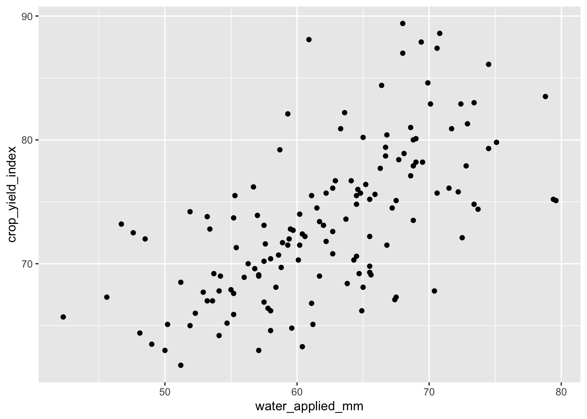
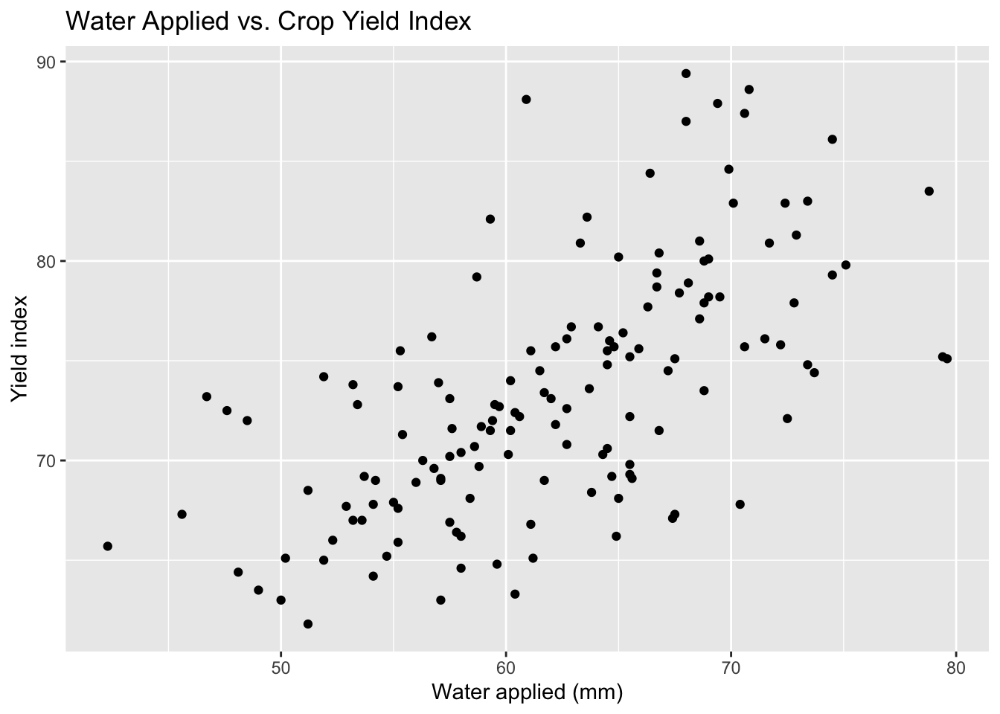
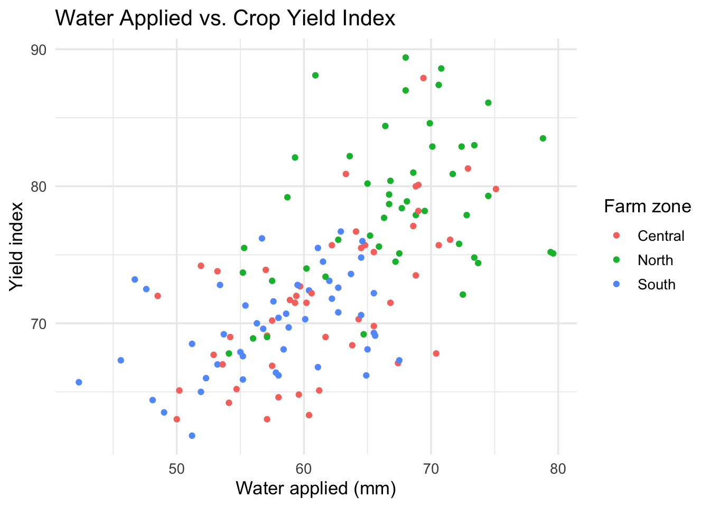
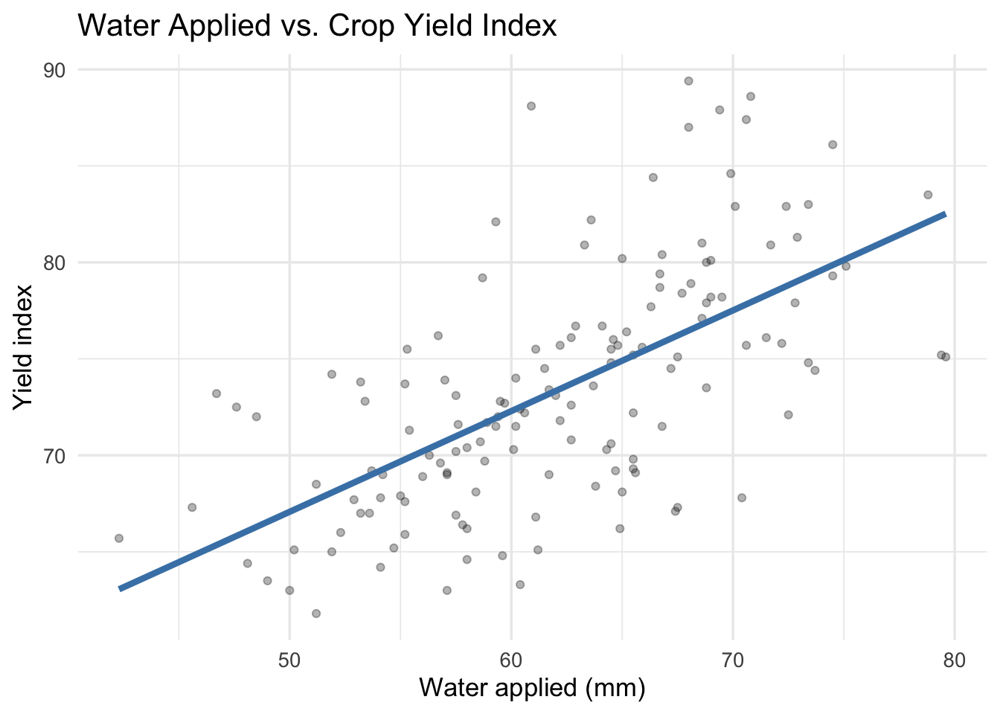
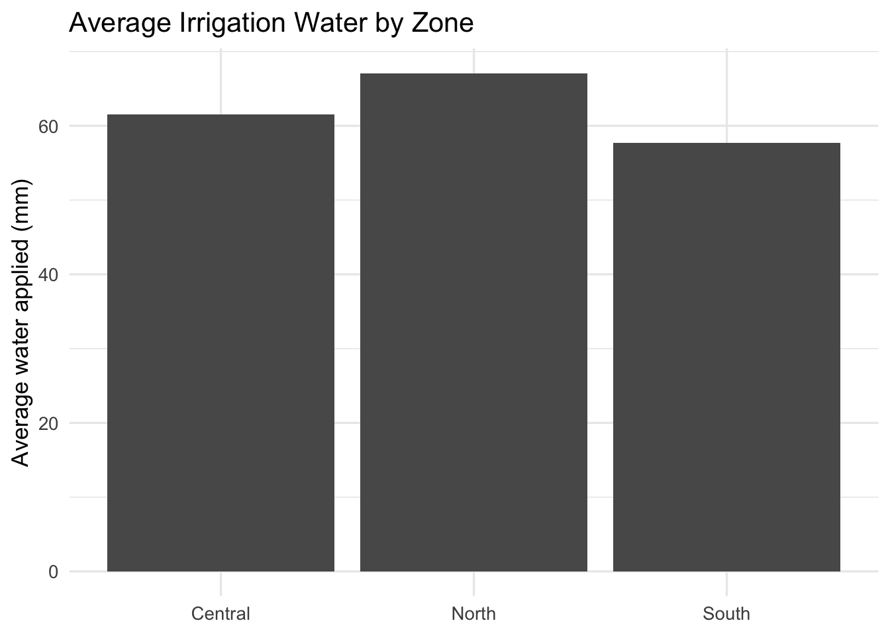
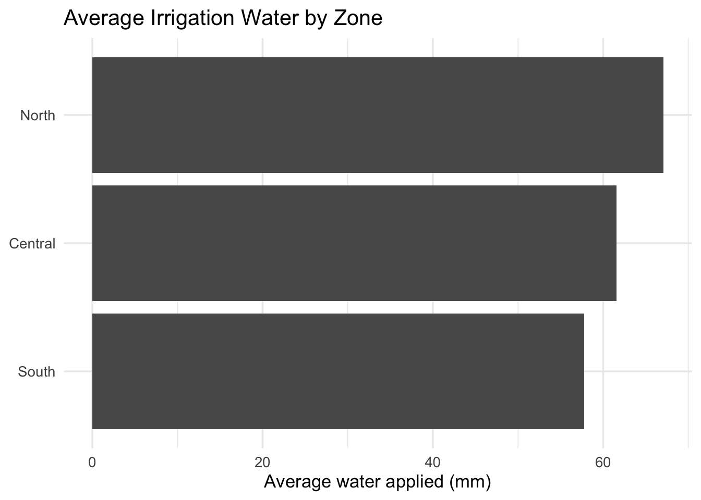
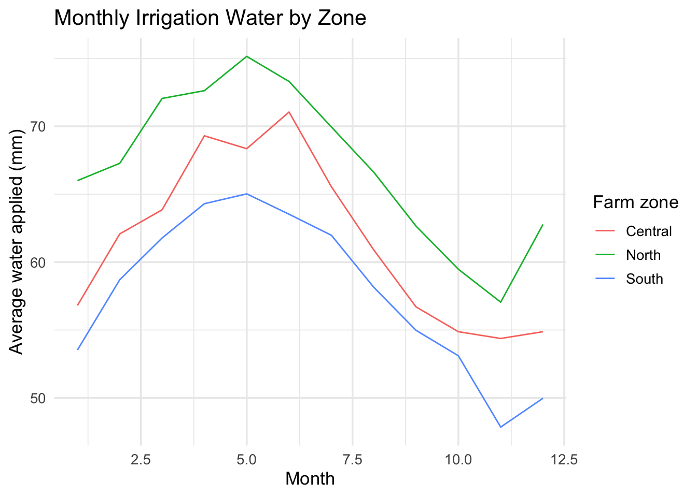
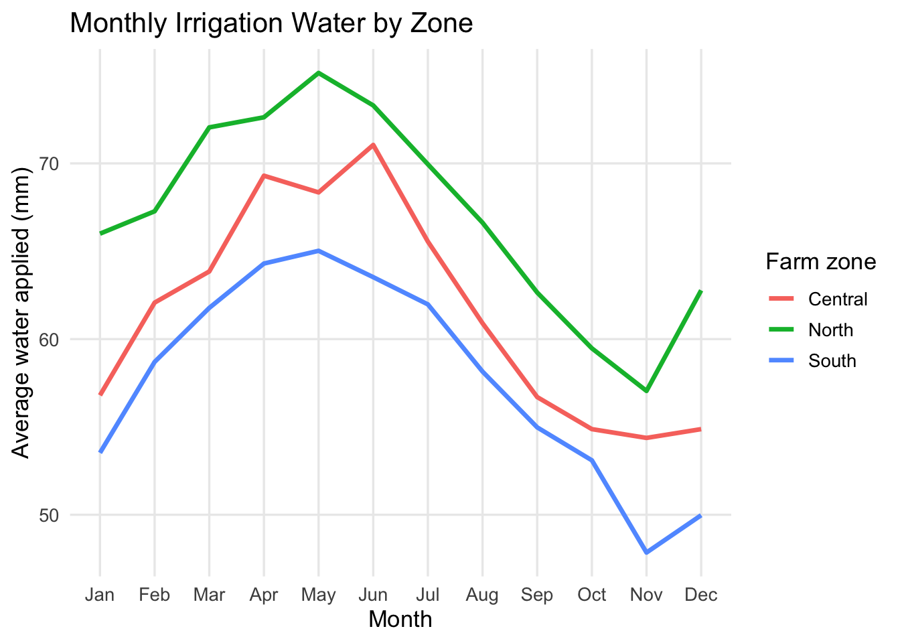
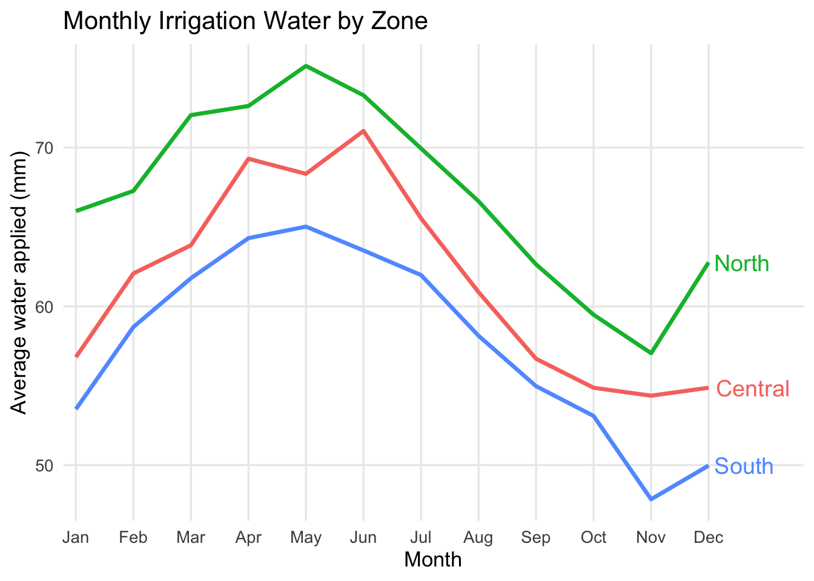

library(tidyverse)Week 12 Lab: Choosing the Right Visualization
This lab is about choosing the right visual for the message, audience, and decision. You will first build a few basic charts from a synthetic dataset, then develop charts to answer a hypothetical question, and finally apply the same logic to your own data.
Preliminaries
- Create a folder called
lab_12and navigate there in RStudio or VS Code (e.g., usingsetwd()or the file pane). - Create a new R script called
lab_12.Rin yourlab_12folder. - Write a brief comment at the top describing the purpose of the script and your name.
- Load the required library at the top of your script:
Lab Notebook
Open a word processing document (Google Doc, Word, or plain text) to serve as your lab notebook. Use it to respond to the questions in this lab. Keep your answers short and direct.
Part 1: Chart Basics and Layering
In this part, you will work with a small synthetic dataset about irrigation and crop response. The goal is not to make a polished dashboard. The goal is to see how the same data can be communicated differently depending on the chart type.
Why this dataset?
The dataset contains monthly reports from four fields across three farm zones. Each report includes:
month: timefarm_zone: a categorical grouping variablefield: a field identifierwater_applied_mm: the amount of irrigation water appliedsoil_moisture_pct: a supporting resource variablestreamflow_cfs: a river or stream condition variablecrop_yield_index: a simplified yield outcome
This structure lets you practice three common visuals:
- Point chart for a relationship
- Bar chart for a comparison
- Line chart for change over time
Build the synthetic dataset
Use the code below to create the dataset. The values are synthetic, but they are shaped to look realistic enough for a classroom exercise.
library(tidyverse)
set.seed(330)
irrigation_dat <- tidyr::expand_grid(
month = factor(month.abb, levels = month.abb),
farm_zone = c("North", "Central", "South"),
field = paste0("Field ", 1:4)
) %>%
mutate(
month_num = as.integer(month),
seasonal_pattern = 8 * sin((month_num - 2) / 12 * 2 * pi),
zone_effect = case_when(
farm_zone == "North" ~ 5,
farm_zone == "Central" ~ 0,
TRUE ~ -4
),
water_applied_mm = round(62 + seasonal_pattern + zone_effect + rnorm(n(), 0, 3), 1),
soil_moisture_pct = round(17 + 0.16 * water_applied_mm + rnorm(n(), 0, 1.2), 1),
streamflow_cfs = round(120 - 0.5 * water_applied_mm + 6 * cos((month_num - 1) / 12 * 2 * pi) + rnorm(n(), 0, 4), 1),
crop_yield_index = round(50 + 0.35 * water_applied_mm + if_else(farm_zone == "North", 4, 0) + rnorm(n(), 0, 4.5), 1)
) %>%
select(month, month_num, farm_zone, field, water_applied_mm, soil_moisture_pct, streamflow_cfs, crop_yield_index)
glimpse(irrigation_dat)Rows: 144
Columns: 8
$ month <fct> Jan, Jan, Jan, Jan, Jan, Jan, Jan, Jan, Jan, Jan, Ja…
$ month_num <int> 1, 1, 1, 1, 1, 1, 1, 1, 1, 1, 1, 1, 2, 2, 2, 2, 2, 2…
$ farm_zone <chr> "North", "North", "North", "North", "Central", "Cent…
$ field <chr> "Field 1", "Field 2", "Field 3", "Field 4", "Field 1…
$ water_applied_mm <dbl> 67.7, 68.0, 63.6, 64.7, 59.7, 57.5, 52.9, 57.1, 55.4…
$ soil_moisture_pct <dbl> 28.8, 28.0, 28.2, 24.5, 27.5, 26.8, 25.9, 23.4, 27.1…
$ streamflow_cfs <dbl> 89.6, 94.2, 94.7, 95.8, 98.3, 96.1, 101.0, 97.6, 106…
$ crop_yield_index <dbl> 78.4, 89.4, 82.2, 69.2, 72.7, 66.9, 67.7, 69.1, 71.3…Layering in ggplot2
Think of a chart as something you build, not something you pick from a menu. In the grammar of graphics, every visualization is made from a small set of parts, and each part has a job: data provide the values, aes() links variables to visual properties, geoms create the marks, and additional layers handle labels, scales, facets, and styling.
Instead of treating a chart as one finished object, ggplot2 lets you assemble it layer by layer so the logic of the visual is explicit. You decide what data to show, how to encode it, what type of mark to use, and how to refine the message for the audience.
In practice:
ggplot()sets up the chart and points to the dataaes()maps variables to visual propertiesgeom_*()adds the markslabs()adds meaningtheme_*()cleans up the appearance
Start with one layer and build from there. That is the core ggplot2 idea.
Build a scatterplot chart
Problem: The board of a regional irrigation district needs to understand the relationship between irrigation water and crop yield across their farms. They are not data specialists, so they need a clear visual that shows how water use affects crop outcomes.
Question: Should the district reduce water deliveries next season, how much would it affect crop yield?
Use a geom_point() to show the relationship between irrigation water and the yield index.
ggplot(irrigation_dat, aes(x = water_applied_mm, y = crop_yield_index)) + #define the data and the mapping of variables to axes
geom_point() #add points to show the relationship
Now add labels to make the message clearer.
ggplot(irrigation_dat, aes(x = water_applied_mm, y = crop_yield_index)) +
geom_point() +
labs(
title = "Water Applied vs. Crop Yield Index",
x = "Water applied (mm)",
y = "Yield index"
) 
You could also add color to show the farm zone, but in this case it does not add much to the message. The relationship between water and yield is clear without it, and the zones are not a key part of the story.
ggplot(irrigation_dat, aes(x = water_applied_mm, y = crop_yield_index, color = farm_zone)) +
geom_point() +
labs(
title = "Water Applied vs. Crop Yield Index",
x = "Water applied (mm)",
y = "Yield index",
color = "Farm zone"
) +
theme_minimal(base_size = 13)
Let’s layer on a linear trend line to make the relationship even clearer. We also want to fade the points a bit so the line stands out more.
ggplot(irrigation_dat, aes(x = water_applied_mm, y = crop_yield_index)) +
geom_point(alpha = 0.3) + #fade the points
geom_smooth(method = "lm", se = FALSE, color = "steelblue", linewidth = 1.5) + #add a linear trend line
labs(
title = "Water Applied vs. Crop Yield Index",
x = "Water applied (mm)",
y = "Yield index"
) +
theme_minimal(base_size = 13)
Save this chart using ggsave() and include it in your lab notebook.
ggsave("water_yield_scatter.png", width = 6, height = 4)Build a bar chart
Problem: The board of a regional irrigation district needs to understand how average water use varies across farm zones. They are not data specialists, so they need a clear visual that shows the differences across zones.
Question: Which farm zone has the highest average water use?
Use a bar chart to compare average irrigation water across zones.
irrigation_dat %>%
group_by(farm_zone) %>%
summarise(mean_water = mean(water_applied_mm), .groups = "drop") %>%
ggplot(aes(x = farm_zone, y = mean_water)) +
geom_col() +
labs(
title = "Average Irrigation Water by Zone",
x = NULL,
y = "Average water applied (mm)"
) +
theme_minimal(base_size = 13)
Let’s reorder the zones so the highest water use is at the top. We can also flip the axes for better readability.
irrigation_dat %>%
group_by(farm_zone) %>%
summarise(mean_water = mean(water_applied_mm), .groups = "drop") %>%
ggplot(aes(x = reorder(farm_zone, mean_water), y = mean_water)) + #reorder the zones by mean water use
geom_col() +
coord_flip() + #flip the axes for better readability
labs(
title = "Average Irrigation Water by Zone",
x = NULL,
y = "Average water applied (mm)"
) +
theme_minimal(base_size = 13)
Build a line chart
Problem: The board of a regional irrigation district needs to understand how average water use changes over the year across farm zones. They are not data specialists, so they need a clear visual that shows the seasonal pattern and differences across zones.
Question: How does average irrigation water change over the year, and how does that pattern differ across farm zones?
Use a line chart to show how average irrigation water changes over the year.
irrigation_dat %>%
group_by(month_num, month, farm_zone) %>%
summarise(mean_water = mean(water_applied_mm), .groups = "drop") %>%
ggplot(aes(x = month_num, y = mean_water, color = farm_zone, group = farm_zone)) +
geom_line() +
labs(
title = "Monthly Irrigation Water by Zone",
x = "Month",
y = "Average water applied (mm)",
color = "Farm zone"
) +
theme_minimal(base_size = 13)
The numbers on the x-axis are hard to interpret. We can also use the month variable for the x-axis to get the month names instead of numbers. Let’s also increase the line width and remove the minor grid lines to make the pattern clearer.
irrigation_dat %>%
group_by(month_num, month, farm_zone) %>%
summarise(mean_water = mean(water_applied_mm), .groups = "drop") %>%
ggplot(aes(x = month_num, y = mean_water, color = farm_zone, group = farm_zone)) +
geom_line(linewidth = 1.2) +
scale_x_continuous(breaks = 1:12, labels = month.abb) +
labs(
title = "Monthly Irrigation Water by Zone",
x = "Month",
y = "Average water applied (mm)",
color = "Farm zone"
) +
theme_minimal(base_size = 13) +
theme(panel.grid.minor = element_blank())
Finally, we can remove the legend and add direct labels to make it easier for the board to read without needing to look back and forth.
irrigation_dat %>%
group_by(month_num, month, farm_zone) %>%
summarise(mean_water = mean(water_applied_mm), .groups = "drop") %>%
ggplot(aes(x = month_num, y = mean_water, color = farm_zone, group = farm_zone)) +
geom_line(linewidth = 1.2) +
scale_x_continuous(breaks = 1:12, labels = month.abb, expand = expansion(mult = c(0.02, 0.15))) +
labs(
title = "Monthly Irrigation Water by Zone",
x = "Month",
y = "Average water applied (mm)"
) +
theme_minimal(base_size = 13) +
theme(panel.grid.minor = element_blank(), legend.position = "none") +
geom_text(
data = irrigation_dat %>%
group_by(month_num, month, farm_zone) %>%
summarise(mean_water = mean(water_applied_mm), .groups = "drop") %>%
filter(month_num == 12),
aes(label = farm_zone),
hjust = -0.1,
vjust = 0.5,
size = 5
)
Power BI comparison
Now recreate the same three plots in Power BI:
- Point chart:
water_applied_mmon the x-axis andcrop_yield_indexon the y-axis - Bar chart: average
water_applied_mmbyfarm_zone - Line chart: average
water_applied_mmbymonth_numandfarm_zone
Do not worry about formatting. Focus on matching the chart type to the message.
Question 1: Which chart best shows a relationship between two quantitative variables?
Question 2: Which chart best shows a comparison across categories?
Question 3: Which chart best shows change over time?
Answer these in your notebook in 1-2 sentences total.
Part 2: Agri-Environmental Decision Scenario
You are a member of an analytical team advising an irrigation district. It is a dry year, total water available next season is expected to fall by 15%, and the district board must make an economic allocation decision.
Scenario
A regional irrigation district is evaluating how to allocate scarce water across 18 farms growing corn, soybeans, and alfalfa. The board wants to preserve as much crop value as possible per acre-foot. The price of corn is $5.00 per bushel, soybeans are $6.00 per bushel, and alfalfa is $210 per ton (roughly $7.00 per bushel equivalent). The board is considering two options for allocating the water cut:
- whether to apply a uniform 15% cut to all farms (assume the cut reduces water use and yield proportionally)
- target larger cuts to farms where water appears to generate lower yield returns
The district has farm-level data with the following variables:
farmcropzoneseasonal_water_acft- the total water applied in acre-feetyield_bu_acre- the average yield in bushels per acredrought_stress_index- a measure of how much the farm is affected by drought (higher means more stressed)
The board has limited time and is not made up of data specialists. They need one chart that clearly shows the economic trade-off between water use and expected crop outcomes so they can choose between a uniform cut and a targeted cut policy.
Your task
Choose the single best visualization for this decision and audience. You may build it in any software. The best visual is the easiest for the board to understand.
Question 4:Include your chart in your lab notebook and write a short explanation of your choice. Be sure to address these points:
- What, if any, analysis did you do to prepare the data for visualization?
- Which chart type did you choose, and why is it better than at least one other plausible option?
- What is the one message the board should take away from the chart?
Part 3: Apply the Idea to Your Own Data
Now transfer the same thinking to a problem that matters to you.
Your task
Use your own data, or make up a small dataset that looks like the data you expect to collect. Your chart should help a real person make a decision.
Question 5: Write a short context statement that answers these four prompts:
- What is the problem?
- What decision needs to be made?
- Who needs to make the decision?
- Why does that audience need this chart?
Then create one chart that fits that context.
Guidance
- If you have real data, use it.
- If you do not have real data yet, invent a dataset that is realistic for your topic.
- Keep the dataset small and focused.
- Pick the chart based on the message, not the tool.
Question 6: Include a copy or screenshot of your final chart and explain why it is the right visual for that audience.
Deliverables
You will submit both a log file and a lab notebook.
Submit on Canvas:
Log file (
lab_12.log) Use the sink-source-sink pattern. Your log should include code, output and comments explaining each step.Lab notebook with answers to Questions 1-6